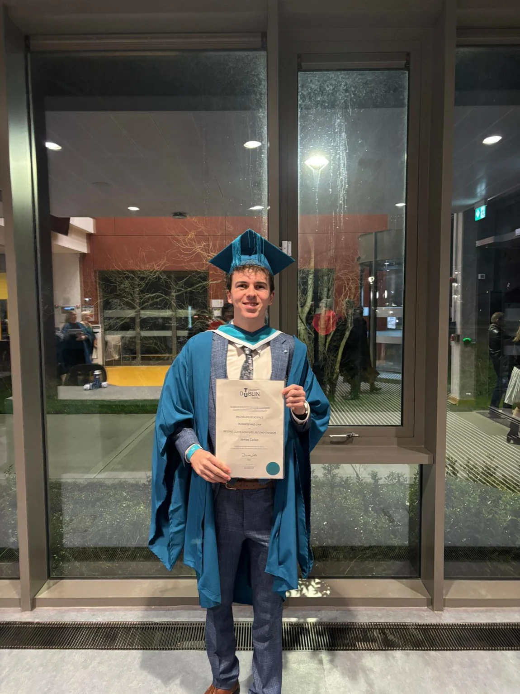
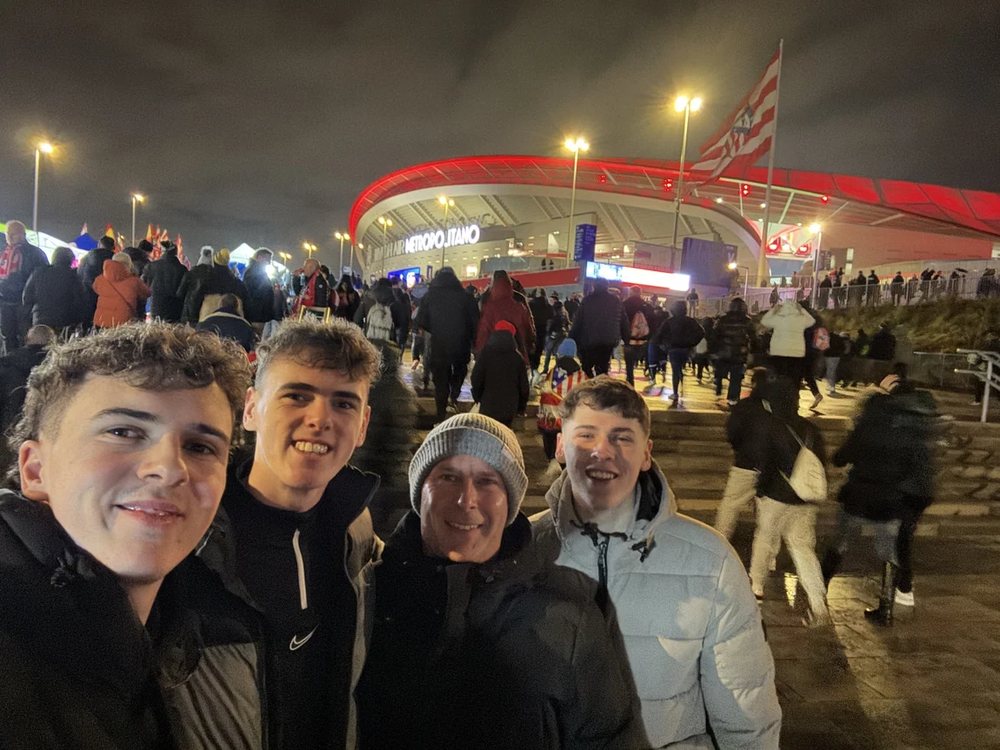
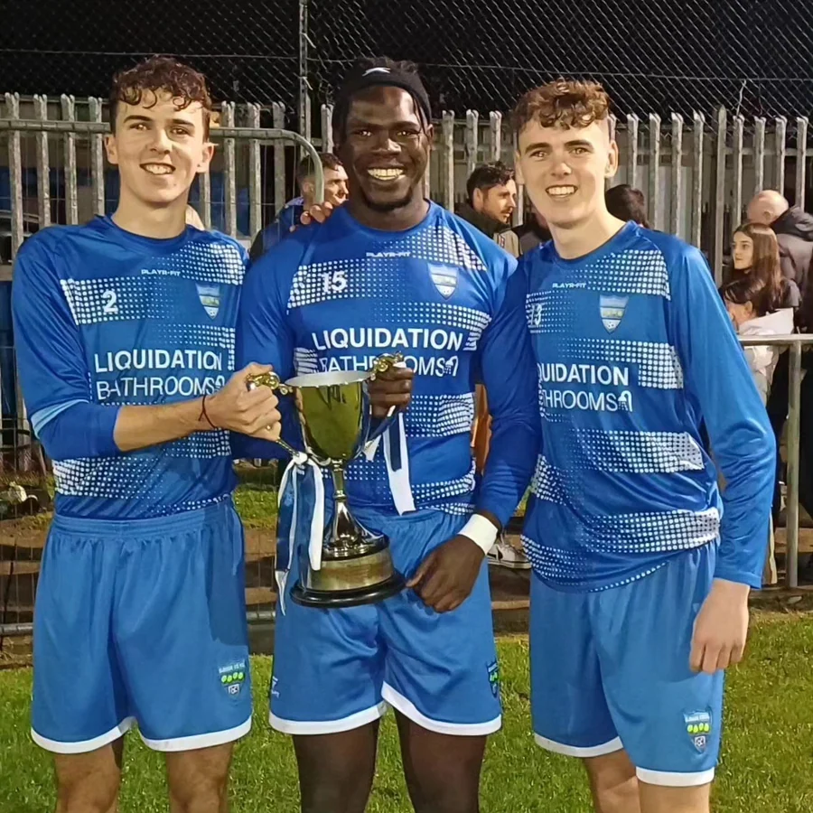

Football, the people around it, and everything that happens away from the pitch.
I’m James Callan, a football writer, designer and media creative based in Dublin. I’ve always been interested in pretty much everything going on around football. The matches, obviously, but also how clubs operate, how they talk to supporters, how they recruit and why some seem to have their act together a little more than others.
I’ve written for RTÉ Sport and independent publications, worked across club media, made graphics and built Touchline. I’m currently Head of Content & Media at LOI Talk, and previously held the same role at Boardroom Ball. Between those projects, I’ve got to work on reporting, newsletters, design, social content and football strategy.
I also play and coach football, which probably explains why I can’t leave it alone when I finish working. I enjoy the writing, the design and the thinking behind it all. I’ve never been especially interested in choosing just one.

Football Content Awards finalist.
Best New Content Creator
Recognised as a finalist in the 2026 Football Content Awards for my work creating football content. It’s a particularly lovely thing to see after putting so much time into writing, graphics and building my own projects.


Not just behind a laptop.
Football has taken me into dressing rooms, academies, press boxes and a few stadium trips I'd happily repeat. I've coached at grassroots and academy level, and completed the FAI Grassroots coaching badge.
I've also appeared on the TicketCo Podcast and The LOI Talk Pod to talk about football and the work around it.
TU Dublin
BA (Hons) Business & Law · 2025
Dissertation: Levelling the Playing Field: Using EU Competition Law to Regulate Multi-Club Ownership in Football.
Brunel University London
MSc Business Intelligence & Digital Marketing · 2026–present (in progress)
FAI Grassroots coaching badge
Completed. Practical football coaching development alongside playing and academy experience.
Additional training
PFSA talent identification and opposition analysis training, HubSpot Social Media Marketing, Google digital marketing and sports sponsorship studies.
TicketCo Podcast
Guest appearance discussing football and the work around the game.
The LOI Talk Pod
Guest appearance covering League of Ireland football.